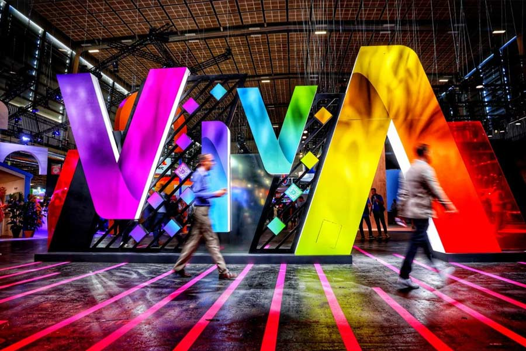
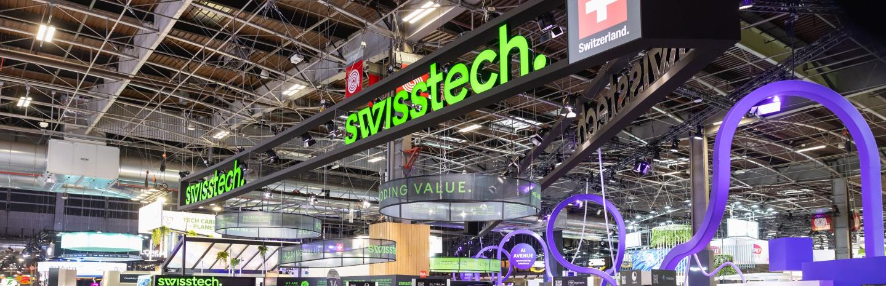

All Posts
系列文章

2026.06.20 / Published
VivaTech 2026 最後一天之後，哪些科技值得繼續追
展會最後一天之後，最值得追的不是單一酷炫產品，而是 AI agent、開放模型、即時翻譯、永續基礎建設與品牌科技如何真的進入日常流程。

Next
Upcoming
下一篇觀察準備中
後台新增並發布文章後，這裡會自動更新文章列表。
Series / VivaTech 2026
從巴黎科技展看 AI、法國新創、永續移動、健康長壽與創意產業。這裡收集所有系列文章，方便每天更新與回顧。
All Posts

2026.06.20 / Published
展會最後一天之後，最值得追的不是單一酷炫產品，而是 AI agent、開放模型、即時翻譯、永續基礎建設與品牌科技如何真的進入日常流程。

Upcoming
後台新增並發布文章後，這裡會自動更新文章列表。